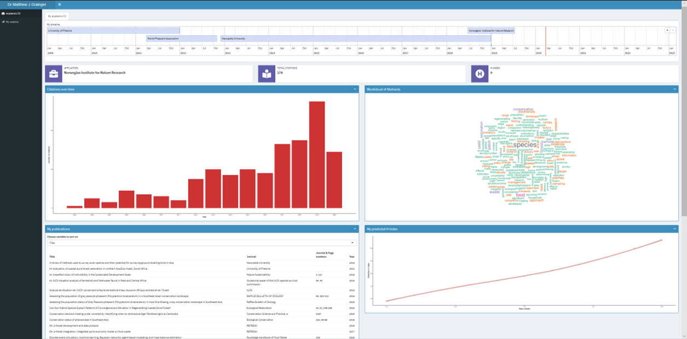

Inspired by Prof. Mark Reed’s infographic CV (see: https://www.fasttrackimpact.com/post/2019/06/06/how-to-make-an-infographic-cv-featuring-impact-that-you-could-actually-submit-with-your-n) I decided to see if I could make a ShinyDashboard version. My first attempt can be found at: https://drmatt.shinyapps.io/AcademicCVShinyDashboard/
It still needs a lot of work to make it more visually appealling, but I think its a good starting point.
